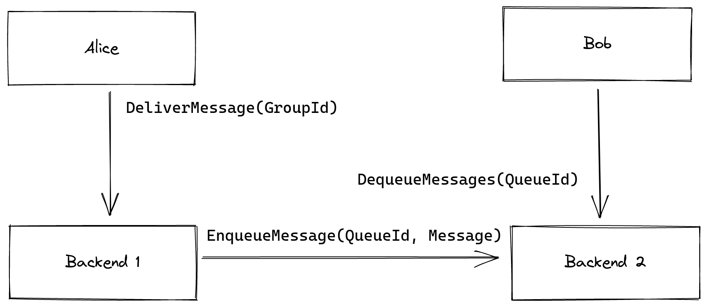

This book contains design considerations and documentation for an infrastructure that allows clients to exchange messages via the Messaging Layer Security (MLS) protocol.
Functional Requirements
Before we introduce the architecture and the individual modules, we first define the functional requirements for the homeserver as a whole. We begin with the requirements dictated by the underlying Messaging Layer Security (MLS) protocol. While MLS doesn’t necessarily require a central component like a homeserver, it greatly increases the robustness of the protocol.
- Message distribution: Clients must be able to have the homeserver distribute messages to other members of a group.
- Authentication: Clients must be able to authenticate other clients. The homeserver must provide the baseline in terms of client authentication by vouching for the identity of individual clients.
- KeyPackage distribution: Clients must be able to upload their own KeyPackages to the homeserver and download those of other clients to facilitate asynchronous group additions.
Besides these basic functional requirements, a modern messaging infrastructure has to provide a few additional services.
- User and client management: Users must be able to register and add or remove clients afterwards.
- Queuing: Since message distribution must be possible asynchronously, the homeserver has to provide a mechanism for messages to be queued until their intended recipient comes online to collect them. To avoid metadata, the homeserver will likely maintain two different queue types, depending on how closely associated the queue needs to be with the user’s identity.
- Realtime notifications: When a message is queued for a given user, the homeserver should try to alert the user in real-time, such that they can retrieve their message. The ability to do so might depend on the user’s client(s).
- Group management: Message distribution will require that a certain amount of group-specific information is stored on the homeserver. Users should be able to manage that information. Ability to manage the group should be subject to a member’s role in the group (Admin/Member)
- User discovery: Users must be able to find other users and initiate a conversation with them. This is closely related to KeyPackage distribution, which enables the establishment of the shared key material between the two users’ clients.
- Asset distribution: Clients must be able to share files with one-another that are too large for individual MLS messages and the queuing system. The homeserver must enable clients to upload encrypted files for other clients to download.
Besides these basic example, a modern messenger should enable other sophisticated features such as real time voice and video chat. Since the goal of this project is an initial proof of concept, we omit these for now.
Modularization and Architecture Overview
The requirements sketched above provide a good distribution of services across modules within the homeserver. Here, we provide a list of modules, as well as the functionality we expect them to provide to users and their clients.
Modules
- Delivery service:
- Initial creation of a group and management of the corresponding state (including addition and removal of members)
- Message delivery to members of a given group
- Authentication service:
- Registration of new users
- Addition and removal of clients of a given user
- User discovery
- Authentication of users through their clients
- Queuing service:
- Creation of queues for clients
- Enqueuing of messages by the delivery service
- Dequeuing of messages by the client owning the queue
- KeyPackage service:
- Upload of KeyPackages
- Retrieval of KeyPackages for a given client or user
Architecture
The following shows a simplified interface between client and homeserver. Note, that for some of the security requirements (which we will detail in a later report), we might add one or more additional modules. For example, we will likely add a module that provides DDoS protection.

Simplified interface for client ↔ backend communication.
Federated Architecture
We will later generalize the above architecture to work in a federated setting. The general principle here is that individual clients only ever communicate through their own homeserver, so if a client’s query is w.r.t. another client, user or group that exists on another backend, that query will be forwarded accordingly. The target client/user/group’s homeserver is implicit in the GroupId/UserId/QueueId in question.

Sketch of a message delivery from one client across two homeserver. Alice contacts her Delivery Service, which in turn contacts the Queuing Service of Backend 2. Finally, Bob can retrieve the message from his homeserver by contacting the Queuing Service.
Performance goals
The goal of the homeserver(s) is to facilitate messaging for consumers in general and in particular consumers with resource constrained devices such as smartphones running. Despite the advances in battery capacity, memory and computational performance in modern smartphones, consumers should still be able to communicate with the infrastructure without incurring disproportionate resource consumption. Additionally applications should be able to use the infrastructure without requiring exceptions to the restrictions that platforms running on modern smartphones (Android, iOS) impose on applications such as limited computation time when running in the background.
Similarly, homeserver operators should be able to run their servers without a significant overhead in costs due to computation, memory or persistent storage.
Quantifying performance goals is hard, since the hardware differs significantly across vendors. However, since cryptography is going to make up the largest consumer of computation time, as well as memory and persistent storage, we are going to use asymmetric cryptographic operations (public key encryption, signatures) as unit of measurement for computational overhead and number of keys that need to be stored as unit of measurement for memory and persistent storage overhead. This has the added advantage that we can later estimate the additional overhead in case of adoption of a Post-Quantum secure scheme with significantly larger key sizes.
Client Queries
- Network overhead: Clients should be able to perform the most commonly used queries (i.e. send a message to a group or retrieve messages from their queue) with a single round-trip. In particular, it should be possible to request own messages in batch, although the service might limit the size each batch of messages retrieved at a time, leading to additional round trips.
- Computational overhead: The estimated computational cost for a given query heavily depends on the type of query. Let n be the number of member in a given group.
- Simple (application) message to a group: One asymmetric operation for both sender and receiver
- Message updating encryption key material: Less than 3log(n) asymmetric operations for the sender and less than log(n)
- Message updating authentication key material of adding/removing a group member: Same as updating encryption key material plus <10 asymmetric operations per joining client
- Joining a new group: between 5n and 10n asymmetric operations
Performance constraints are especially important if the respective operations are potentially performed in the background, i.e. when a user is not currently interacting with the client.
Homeserver Processing
- Network overhead: Homeservers should typically respond to one message with one response, although fan-out of a message can result in additional messages sent over the network in a federated setting. Note, that disproportionate amplification of network traffic (i.e. one client request causing a number of server requests) will be mitigated by rate limiting measures such as traditional IP-based rate limiting and schemes such as Privacy Pass.
- Computational overhead: With the exception of the group joining cost, the computational cost of the server will be roughly equivalent to that of a client processing a given message.
- IO overhead: A query from a client should result in at most one read and one write operation from/to the homeserver’s database, although we expect caching to reduce the number of reads significantly.
Additional Overhead due to Rate-Limiting
More sophisticated rate limiting measures, such as the Privacy Pass protocol might create additional overhead, such as an occasional additional round-trip and asymmetric operation to retrieve an access token from the homeserver. We estimate the required frequency of this kind of operation to be at most once per day.